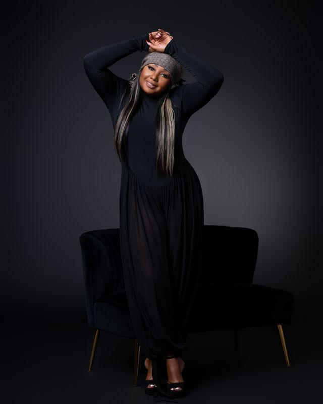

Your image speaks before you do.
Let us style the conversation.
House of Boudoir, Inc. is a premier fashion, beauty, and lifestyle platform founded by Florida-based makeup artist, fashion stylist, and creative consultant Maritza Boudoir.
With over 10 years of experience in the fashion and beauty industry, clients from around the world seek Maritza’s expertise to translate high-fashion trends into practical, elevated everyday style solutions for the modern businessman and businesswoman.
Beyond styling, House of Boudoir serves as a creative sanctuary celebrating fashion, beauty, culture, and the narratives shaping the Haitian and Afro-Caribbean diaspora. We believe style is personal, image is power, and presentation defines the room before a word is spoken.
Services & Offerings
Tailored image architecture designed to empower every client through authenticity, executive presence, and distinction.
- Personal Styling & Wardrobe Editing
- Executive & Everyday Style Solutions
- Professional Makeup Artistry
- Red Carpet, Stage & Special Appearances
- Creative Consulting & Brand Direction
- Editorial Shoot Production

Meet Maritza Boudoir
Maritza Boudoir is a business owner, social entrepreneur, and creative visionary known for helping clients unlock their most confident, authentic selves. She believes authenticity and confidence are the ultimate keys to personal and professional success.
Whether styling international celebrities for stage performances and red carpets or consulting with emerging lifestyle brands, Maritza creates unique, customized looks tailored to each client's character, ambition, and identity.
Book A ConsultationSelected Clients & Partners
A trusted styling and creative partner to celebrated artists, media personalities, entrepreneurs, and global brands.
- Vicky Jeudy Actress
- Emeline Michel Songstress & Artist
- Arly Larivière Singer / Nu Look
- Michael Guirand Singer / VAYB
- Mikaben Artist (In Memoriam)
- Guy Wewe Radio Host & Journalist
- Blondedy Ferdinand Artist & Entrepreneur
- D-Perfect Artist
- Samuel Dameus Media Personality
- Sandra Florvella Entrepreneur / Haitian Businesses
- Katie Flore Fils-Aimé Entrepreneur
- Wanda Tima L’Union Suite
- Veronica Entrepreneur
- Fabie Modernique Project Manager
The Spark Behind BVstylez & The Liberators
Maritza of Boudoir House was part of the early story of BVstylez. As the Co-Owner of Belle Vue Tours, I was dissatisfied with the bags I had to accompany me on my tours and travels.
As my stylist, Maritza simply asked me, ‘If you create bags for the tours, why not create your own travel bag?’
That simple question stuck with me and helped spark the idea of turning what I was creating for Belle Vue Tours into my own brand, THE LIBERATORS under BVstylez.
Maritza of Boudoir House also became the stylist and creator of The Liberators look, adding her creative touch to the journey. I’m grateful that a simple conversation helped plant the seed for what would become BVstylez.